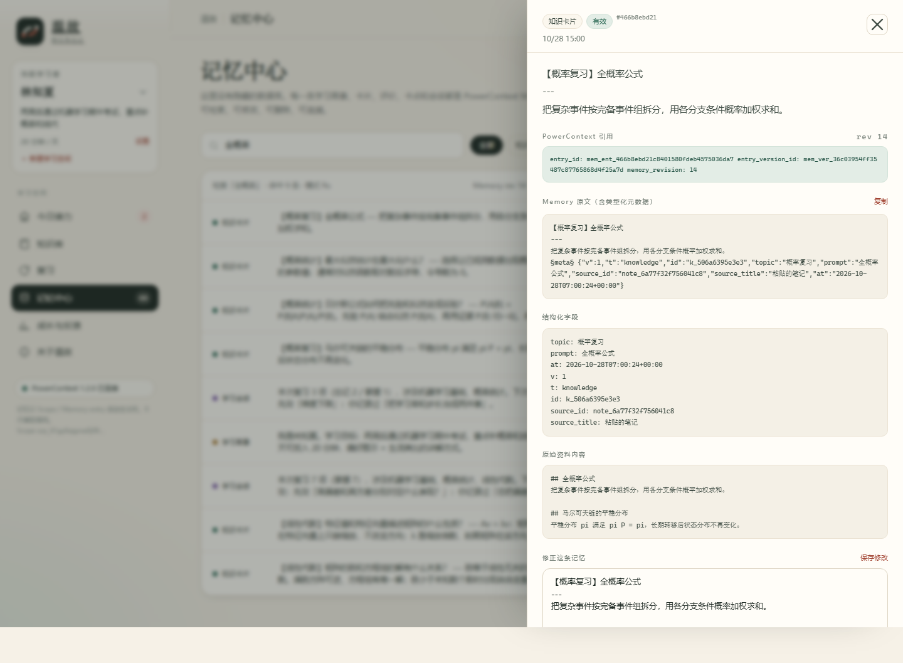
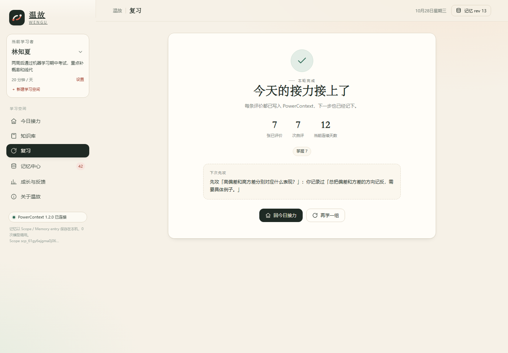
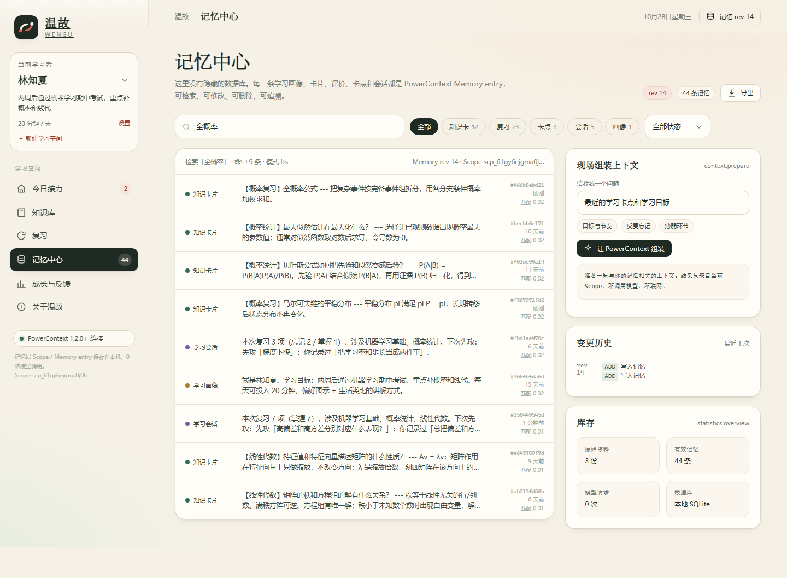
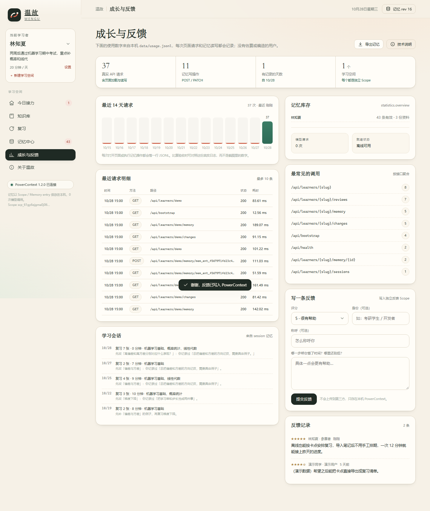

忘了自己学过什么
收藏夹越来越长，真正复习过的内容却没有留下可检索的痕迹。
同一条记忆链路
01 问题
临时抱佛脚时，真正昂贵的不是「再看一遍」，而是重新建立上下文： 学过什么、卡在哪里、上次为什么停下。普通笔记只保存内容，不保存这些状态。
收藏夹越来越长，真正复习过的内容却没有留下可检索的痕迹。
向工具或同学重复目标、偏好和薄弱点，学习被切成一堆互不相连的片段。
停两天之后，不知道应该继续旧卡、补卡点，还是从头再来。
看完一遍觉得懂了，但没有任何机制告诉你：下一次该在什么时候、复习哪一张。
02 怎么工作
没有神秘的推荐系统。温故把学习过程拆成可验证的事件，再用确定性的教练算法重放出计划。
粘贴 Markdown、Q:/A: 或普通段落。原文完整保存为 Source。
每个知识点成为一张卡片，通过 source_id 指回原文，可改可删。
0–3 四档诚实评价。评「忘记」的卡 10 分钟后重新出现，其余按 SM-2 风格扩展间隔。
掌握度、逾期、卡点与 streak 全部由记忆事件重算，不维护第二套状态表。
明天打开时，首页直接给出「先攻哪一张」和理由，而不是一张空白待办。
断点续学不是一句文案。 最近一次会话、未解决卡点和最近复习共同决定今天的开场；会话总结会把「下次先攻」写成下一条记忆。
03 核心技术
每个学习者一个 Scope；写入的是带类型的 Memory entry，原始笔记是 Source。 页面上的每个数字都能指回 entry、版本与 citation。
每个学员独立 Scope；反馈写入共享反馈 Scope，不混进个人记忆。
人类可读文本与结构化字段同条保存；超长答案在写入前按 UTF-8 安全截断。
导入的笔记作为 Source 完整保存，卡片通过 source_id 建立关联。
在记忆中心直接搜「卡点」「全概率」「梯度」，命中结果带分数与 entry 引用。
「关于温故」页现场组装上下文，每条都带 entry_id 与版本，模型请求为 0。
修订生成新版本，删除变为 inactive；旧 revision 仍保留在历史里。

$ python scripts/verify_powercontext.py
PASS powercontext 1.2.0
PASS memory entries 44 total · rev 16
PASS chinese FTS "全概率" matched 9 memories
PASS context.prepare ready · 6 items
PASS citations 6/6 cite entries
PASS model requests 0 (offline, no API key)
Result: 15/15 checks passed只读脚本从外部复核同一组事实，任一失败即以非 0 退出。
04 验证证据
不是「截图里看起来能跑」。所有关键行为都有自动化测试、只读验收脚本或可重复的 UI 路径。
| 验证点 | 实际结果 |
|---|---|
| 中文全文检索 | 搜「全概率」命中 9 条，模式 fts |
| 记忆修订 | revision +1，旧版本仍可追溯 |
| 记忆删除 | active 44 → 43，计划与统计立即收缩 |
| 会话幂等 | 重复 session_id 返回 duplicate: true |
| Source 关联 | 两张导入卡片指回同一份原文 |
| 上下文引用 | context.prepare 6/6 条目带 citation |



05 运行
需要 Python 3.11+。首次安装依赖需要联网，之后可以完全离线使用。 首次启动会自动写入一个可复现的演示学员。
cd qoder
python -m venv .venv
.venv\Scripts\python.exe -m pip install -r requirements.txt
.venv\Scripts\python.exe run.py
# 打开 http://127.0.0.1:8010python3 run.py
06 边界
SQLite + 单 worker，适合个人或小班演示；不是多租户 SaaS。
默认只监听 127.0.0.1。公网部署前应加反向代理与访问控制。
同一张卡在同一秒内连续评两次的极端情况下，重放顺序可能不稳定；正常 10 分钟复现流程不受影响。
「林知夏」与其复习记录均为虚构演示，页面与文档均已标注；真实使用证据单独记录。